Projekt
Posunout, zkrátit, nebo rozložit? Letní prázdniny v datech
Návrhy z letošní debaty přepočítané podle vyhlášky, 20 let termínů MŠMT, teplot ČHMÚ od roku 1961 a dovolené rodičů
vytvořeno 1. 10. 2026 · aktualizováno 31. 10. 2026
Letos v srpnu se ministr školství Robert Plaga zeptal na Facebooku, jestli dva měsíce letních prázdnin ještě dávají smysl. Připomněl, že léto od konce června do 31. srpna sjednotil československý stát v roce 1925 a že za sto let se změnila práce, rodiny i škola. Konkrétní plán za otázkou nebyl a ministr později podle Deníku N vysvětloval, že se prázdniny zatím měnit nebudou.
„Dávají dva měsíce prázdnin v červenci a srpnu smysl i dnes? Nebo je čas přemýšlet, jestli by se volno během roku nedalo rozložit jinak?“
Robert Plaga, ministr školství, příspěvek na Facebooku, srpen 2026
Pod ministrovým příspěvkem by podle Novinek část lidí léto kvůli horku v učebnách prodloužila, zatímco rodiče malých dětí by ho spíš zachovali nebo zkrátili. Předseda školských odborů František Dobšík podle Seznam Zpráv bral ministrův příspěvek jako výstřelek v letních měsících. Většina lidí je totiž se současným stavem spokojená. V průzkumu Ipsos pro Seznam Zprávy z roku 2025 to uvedlo skoro 62 % lidí.
Tenhle text nechce rozhodnout, která varianta je nejlepší. Chce do debaty přidat čísla. Podle vyhlášky o organizaci školního roku jsem přepočítal školní kalendář na desítky let dopředu i dozadu a ověřil ho proti všemu, co ministerstvo za dvacet let vyhlásilo. Přidal jsem evropské srovnání, teploty z meteorologických stanic a zákonnou dovolenou rodičů. Pak jsem stejným kalendářem projel tři směry, které podle mého v debatě zaznívají nejčastěji, tedy posun léta do června, kratší léto s volnem rozloženým do roku a konec školního roku vždy v pátek.
62, nebo 65 dní
Než se dá mluvit o změnách, je dobré vědět, jak dlouhé léto je dnes. Podle vyhlášky má letní volno vždy buď 62, nebo 65 dní. Oba konce prázdnin totiž určuje jediný údaj, a to den v týdnu, na který padne 1. července. Když je to středa, čtvrtek nebo pátek, prázdniny začínají 1. července a končí 31. srpna, tedy přesně 62 dní. V ostatních případech se přes víkend „přilepí“ tři dny navíc, buď v červnu, nebo v září, nebo část na začátku a část na konci. Delší léto (65 dní) tak vychází zhruba ve čtyřech letech ze sedmi.
Jedinou výjimkou za posledních dvacet let bylo letošní léto, které mělo 66 dní. Podle vyhlášky by mělo jen 62, ministr ale na jaře ukončil školní rok už v pátek 26. června místo v úterý 30. června. Ministerstvo podle Hospodářských novin zohlednilo chování značné části rodin. Odjezdy na dovolenou ještě před koncem roku vidí i školy. Šéf Unie školských asociací Jiří Nekuda pro Seznam Zprávy uvedl, že „v červnu a září zaznamenáváme poměrně dost odjezdů žáků a jejich rodin na dovolené“. Pořadatelům táborů ale změna přišla pozdě. „Tábory se obyčejně plánují již v lednu či únoru,“ upozornil v Deníku předseda České rady dětí a mládeže Aleš Sedláček.
Jedno ministerské rozhodnutí tak změnilo délku léta víc, než kolik kalendář kolísá sám od sebe. Návrhy z debaty přitom nepracují s dny, ale s týdny.
62 dní · 65 dní · 66 dní (2026, výjimka MŠMT)
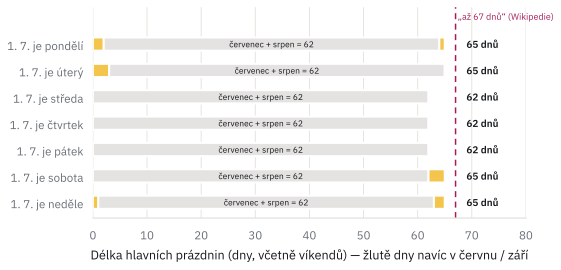
Délka hlavních prázdnin podle dne v týdnu, na který připadne 1. července. Šedě červenec a srpen (62 dní), žlutě dny navíc v červnu a září. Vínová čára označuje údaj „až 67 dnů“ z české Wikipedie. Zdroj: vyhláška č. 16/2005 Sb., § 2 odst. 3; vlastní výpočet.
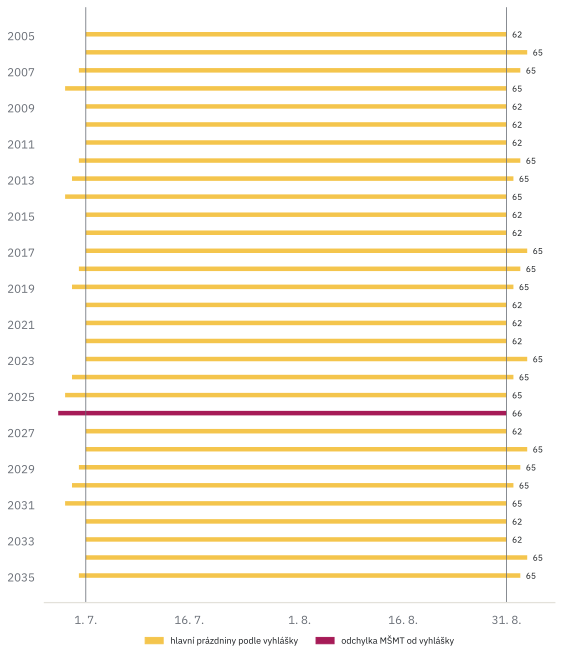
Začátek a konec letních prázdnin 2005–2035 vůči 1. 7. a 31. 8., číslo udává délku ve dnech. Vínově rok 2026, kdy MŠMT ukončilo vyučování dříve, než stanoví vyhláška. Zdroj: vyhláška č. 16/2005 Sb., MŠMT; vlastní výpočet.
Jak vyhláška určuje začátek a konec školního roku
Vyhláška č. 16/2005 Sb. stanoví, že školní vyučování začíná 1. září a končí 30. června. Výjimky jsou jen dvě a § 2 odst. 3 je popisuje takto. „Připadne-li začátek prvního pololetí na pátek, začíná vyučování následující pondělí. Připadne-li konec druhého pololetí na pondělí, končí vyučování předcházející pátek.“ Víkendy pravidlo řešit nemusí, škola v sobotu nezačíná ani nekončí, takže se posouvají samy.
Červenec a srpen mají dohromady 62 dní a 62 = 8 × 7 + 6. Den v týdnu, na který padne 1. září, je proto vždy o jeden „dřív“ než den, na který padne 1. července. Oba konce prázdnin tak určuje jediný údaj, jak ukazuje tabulka.
| 1. 7. je | poslední školní den | první školní den | dny v červnu | dny v září | délka |
|---|---|---|---|---|---|
| pondělí | pá 28. 6. | po 2. 9. | 2 | 1 | 65 |
| úterý | pá 27. 6. | po 1. 9. | 3 | 0 | 65 |
| středa | út 30. 6. | út 1. 9. | 0 | 0 | 62 |
| čtvrtek | st 30. 6. | st 1. 9. | 0 | 0 | 62 |
| pátek | čt 30. 6. | čt 1. 9. | 0 | 0 | 62 |
| sobota | pá 30. 6. | po 4. 9. | 0 | 3 | 65 |
| neděle | pá 29. 6. | po 3. 9. | 1 | 2 | 65 |
Délku počítám od dne po vysvědčení do dne před prvním školním dnem, včetně víkendů. V celém 400letém cyklu gregoriánského kalendáře vychází 65 dní v 228 letech (57 %) a průměrná délka je 63,7 dne. Pondělní pravidlo platilo prokazatelně už v roce 2008, kdy 30. 6. připadl na pondělí a školní rok skončil v pátek 27. 6.
Celý model stojí na vyhlášce. Ministerstvo ale každý rok vydává vlastní dokument s konkrétními termíny a ve vyhlášce není úplně všechno, přesné dny podzimních prázdnin si například určuje samo. Než jsem z modelu začal vyvozovat závěry, porovnal jsem ho proto se vším, co MŠMT za posledních dvacet let skutečně vyhlásilo. Ve 140 porovnaných termínech (začátky a konce školního roku a všechny prázdniny) se model s ministerstvem shoduje ve všech. Jedna z těch shod je ovšem letošní ministerská výjimka, kterou model nevypočítá z vyhlášky, ale vede ji zvlášť.
Česká Wikipedie a s ní řada webů, které od ní přebírají, tvrdí, že letní prázdniny mohou být „až 67 dnů dlouhé“. Podle vyhlášky to nejde. Odkud se číslo nejspíš vzalo, vysvětluji v posledním rámečku této části.
Jak jsem model ověřil proti 20 letům dokumentů MŠMT
MŠMT každý rok zveřejňuje dokument „Organizace školního roku“ se všemi termíny. Web msmt.gov.cz byl ale v roce 2025 přestavěn a starší ročníky z něj zmizely. Dokumenty jsem proto stáhl z Internet Archive. Přes rozhraní Wayback Machine (CDX API) jsem vyhledal všechny archivované stránky „organizace-skolniho-roku“ a pro každý rok stáhl nejnovější snímek, celkem 25 stránek. Ke každému souboru si ukládám původní adresu, adresu snímku a čas stažení.
MŠMT však často přepisovalo starou adresu textem nového roku. Stránka s „2015-2016“ v adrese tak obsahuje i rok 2016/17. Školní rok proto čtu z textu dokumentu, ne z adresy. Z textů jsem automaticky vytěžil sedm údajů za každý rok (první a poslední vyučovací den, začátek dalšího roku, podzimní, vánoční, pololetní a velikonoční prázdniny) a porovnal je s výpočtem podle vyhlášky.
- porovnání
- 20 školních let (2005/06–2027/28) × 7 údajů = 140
- shoda
- 140 / 140, z toho 139 podle pravidel vyhlášky a 1 známá výjimka (konec roku 2025/26); po opravě pravidla pro podzimní prázdniny v letech, kdy 28. 10. padne na neděli
- chybí
- plné dokumenty pro 2009/10, 2011/12 a 2018/19 (v archivu nejsou)
Vánoční prázdniny porovnávám jen na všedních dnech, protože MŠMT je uvádí jednou včetně víkendů, jindy bez nich. Rok 2025/26 dokument MŠMT původně ukončil 30. 6. 2026, ministerstvo ho později zkrátilo na 26. 6. (edu.gov.cz). Takové odchylky od vyhlášky vedu v modelu zvlášť, se zdrojem. Zajímavost z archivu ukazuje, že vybrané pražské školy končily školní rok 2005/06 už ve středu 28. 6. 2006, protože ubytovávaly cvičence XIV. všesokolského sletu (opatření MŠMT č. j. 12386/2006-20).
Odkud se mohlo vzít 67 dní z Wikipedie
Článek Prázdniny na české Wikipedii uvádí, že letní prázdniny „nejdelší dobu mohou být (včetně víkendů) až 67 dnů dlouhé“ (staženo 29. 9. 2026). 67 dní by vyšlo, kdybychom k 62 dnům přičetli přesah do června z jednoho roku (+3 dny, když 1. 7. padne na úterý) a přesah do září z jiného (+2 dny, když 1. 7. padne na neděli). Takové přesahy ale nemohou nastat ve stejném roce, protože oba konce určuje týž den v týdnu (viz tabulka výše). Součet dvou největších přesahů by dal dokonce 68 dní, do září totiž mohou přibýt až 3 dny, když 1. 7. padne na sobotu.
Zmatek nejspíš přiživuje, že ani úřady nepočítají délku prázdnin jednotně. MŠMT v dokumentech „Organizace školního roku“ uvádí začátek hlavních prázdnin někdy až v pondělí, bez víkendu, který jim předchází („od pondělí 2. července 2007“ v dokumentu pro 2006/07, stejně v dokumentu pro 2017/18), jindy už od soboty („od soboty 29. června 2013“ v dokumentu pro 2012/13). Evropská síť Eurydice ve svých kalendářích pro 2023/24 uvádí české léto 2024 jako 63 dní (1. 7.–1. 9.), přestože vysvědčení se rozdávalo v pátek 28. 6., a podle stejné logiky jako jinde v článku tak léto mělo 65 dní.
Wikipedie má naopak pravdu u Vánoc. Vánoční prázdniny trvají podle § 4 odst. 3 od 23. 12. do 2. 1. (začínají už v pondělí, je-li 23. 12. úterý, a končí v pátek, je-li 3. 1. pátek). Včetně navazujících víkendů tak vychází 11, 12, nebo 16 dní.
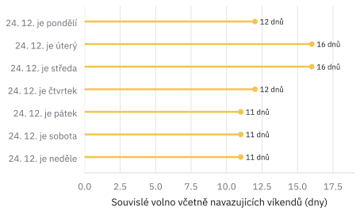
Vánoční volno včetně navazujících víkendů podle dne v týdnu, na který připadne Štědrý den. Zdroj: vyhláška č. 16/2005 Sb., § 4 odst. 3; vlastní výpočet.
je devět týdnů evropský průměr?
Ministr svou otázku opřel o srovnání s Evropou. „Českých zhruba 9 týdnů je v Evropě v zásadě průměr,“ napsal podle Echo24. Německo má podle něj léto zpravidla jen šestitýdenní a Francie zhruba osmitýdenní, volno jim ale nezmizelo, jen je rozložené do roku.
Jednotlivá čísla v datech evropské sítě Eurydice sedí. V létě 2024 měla Francie 56 dní, Česko 63 a Německo v mediánu spolkových zemí 42. S průměrem je to ale jinak. Medián 39 evropských vzdělávacích systémů je 10 týdnů a delší léto než Česko má 25 z nich, kratší jen 10. Česko tak není uprostřed, ale blíž kratšímu konci. Rozptyl je přitom obrovský. Kolem šesti týdnů mají vedle Německa i Nizozemsko, Dánsko nebo část Švýcarska, Itálie, Lotyšsko nebo Malta naopak 13 týdnů i víc.
Seznam Zprávy už loni z dat Eurydice vyvodily, že české školy mají v porovnání s evropskými zeměmi i celkově méně volných dní. Kratší léto by tedy Česko od Evropy spíš vzdálilo, pokud by se volno nepřidalo jinde. Právě tím se zabývají scénáře dál v textu.
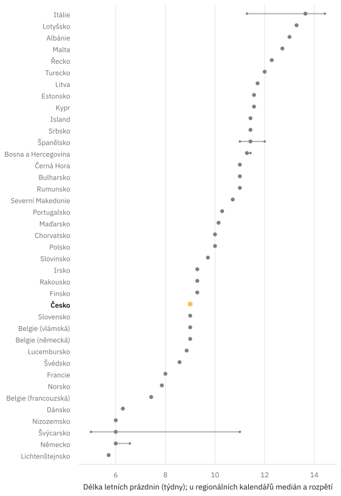
Délka letních prázdnin na 1. stupni (ISCED 1) ve 39 vzdělávacích systémech; u zemí s regionálními kalendáři medián a rozpětí. Školní rok 2023/24. Zdroj: Eurydice, School calendars 2023/24.
Proč srovnávám v týdnech, ne ve dnech
Data pocházejí z tabulky Eurydice School calendars 2023/24 (1. stupeň, ISCED 1). Je to nejnovější ročník, který Eurydice zveřejnila jako soubor; novější kalendáře jsou jen v interaktivním dashboardu. Za letní prázdniny beru nejdelší volný úsek, který začíná v květnu až srpnu. U zemí, kde se kalendář liší podle regionu (Německo, Španělsko, Itálie, Švýcarsko a další), ukazuji medián a rozpětí přes regiony.
Země ale nepočítají délku léta stejně, například jestli započítat víkend před začátkem prázdnin. Eurydice uvádí české léto 2024 jako 63 dní, podle definice v tomto článku to bylo 65. Rozdíly několika dní jsou proto šum a země srovnávám v týdnech. Medián 39 vzdělávacích systémů je 10 týdnů, Česko má kolem 9.
13 týdnů bez jediného volného dne
Druhá půlka ministrovy otázky se týká toho, jak je volno rozložené během roku. Analytik vzdělávací politiky Karel Gargulák z PAQ Research debatu uvítal, protože „dva měsíce prázdnin jsou opravdu dlouhá doba na to, aby děti vypadly z nějaké rutiny, vztahů, učení“. Dlouhé ale bývají i úseky mezi prázdninami. Letošní školní rok 2026/27 je v tom výjimečný. Po Velikonocích čeká děti 67 vyučovacích dní v kuse. Od úterý 30. března do konce června nebude ani jeden volný den kromě víkendů. Velikonoce jsou v tomto školním roce brzy (28. března 2027) a oba květnové svátky, 1. i 8. května, padnou na sobotu.
Taková konstelace se opakuje zhruba jednou za pár let. Naposledy to bylo ve školním roce 2015/16 (68 dní v kuse), příště to bude v roce 2031/32. V běžném roce má nejdelší úsek bez volna 37 až 48 vyučovacích dní, tedy zhruba osm až deset týdnů.
Na druhé straně stojí krátká volna. Podzimní prázdniny mají podle vyhlášky dva dny přilepené ke 28. říjnu a pololetní jen jeden. Tehdejší předseda sněmovního školského výboru Matěj Ondřej Havel (TOP 09) proto už loni navrhoval pololetní prázdniny zrušit a podzimní i velikonoční prodloužit na celý týden. Část škol si podle téhož článku týdenní podzimní volno už dnes skládá z ředitelského volna. Týdenní podzimní prázdniny jsou proto součástí jednoho ze scénářů níže.
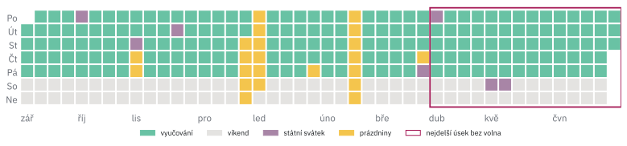
Školní rok 2026/27 (okresy se 3. týdnem jarních prázdnin). Zeleně vyučování, žlutě prázdniny, fialově státní svátky, šedě víkendy. Vínový rámeček vyznačuje nejdelší úsek bez volného dne. Zdroj: vyhláška č. 16/2005 Sb., MŠMT; vlastní výpočet.
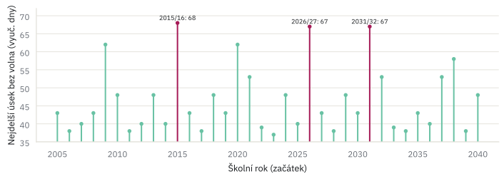
Nejdelší úsek bez volného dne (počet vyučovacích dní) ve školních letech 2005/06–2040/41. Vínově rekordní roky. Zdroj: vlastní výpočet podle vyhlášky č. 16/2005 Sb.
Jak měřím „úsek bez volna“ a počet vyučovacích dní
Vyučovací den je všední den, který není státním ani ostatním svátkem (zákon č. 245/2000 Sb.) a nepatří do prázdnin. Ředitelské volno nezapočítávám, protože ho každá škola vyhlašuje jinak.
- volný blok
- souvislá řada dní bez výuky, která obsahuje aspoň jeden všední den (víc než obyčejný víkend); do délky se počítají i víkendy
- úsek bez volna
- doba mezi dvěma volnými bloky (nebo mezi začátkem či koncem roku a nejbližším blokem), kterou přerušují jen obyčejné víkendy; měří se počtem vyučovacích dní
Většinu termínů určuje vyhláška přesně. Výjimkou jsou podzimní prázdniny, které vyhláška definuje jen větou „Podzimní prázdniny trvají 2 dny a přičleňují se ke státnímu svátku 28. října“ (§ 4 odst. 2) a jejich termín stanoví MŠMT. Pravidlo jsem odvodil z 20 let vyhlášených termínů. MŠMT vždy volí ty dva dny, které spojí 28. říjen s víkendem. Když 28. 10. padne na víkend, dává je na čtvrtek a pátek před ním. Podzimní volno tak má 5 dní, případně 4.
Rekordní roky (67–68 vyučovacích dní v kuse) vznikají souhrou dvou podmínek. Velikonoce jsou brzy, takže velikonoční volno je už koncem března, a 1. i 8. května padnou na víkend, takže květen žádné volno nepřidá. Počet vyučovacích dní za rok se pohybuje mezi 190 a 196. Nejméně jich měl rok 2025/26 se zkráceným červnem.
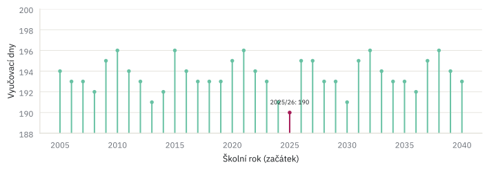
Počet vyučovacích dní ve školních letech 2005/06–2040/41 (okresy s 1. týdnem jarních prázdnin). Vínově 2025/26 se zkráceným červnem. Zdroj: vlastní výpočet.
jarní prázdniny v šesti týdnech
Jarní prázdniny jsou v Česku jediné, které nemají všichni najednou. Okresy jsou podle přílohy vyhlášky rozdělené do šesti skupin a každá má volno v jiném týdnu mezi začátkem února a polovinou března. Každá skupina má prázdniny rok od roku o týden později a kdo měl letos prázdniny nejpozději, bude je mít příští rok nejdřív. Celý rozpis, který vyhláška vypisuje v dlouhé tabulce, se dá shrnout do jediného pravidla s šestiletým cyklem.
Důvod rozložení vyhláška neuvádí. Předpokládám, že jde hlavně o hory, protože kdyby měli všichni jarní prázdniny stejný týden, potkali by se na sjezdovkách. Skupiny ale nejsou stejně velké. Podle počtu dětí ve věku 6–18 let (ČSÚ, stav k 31. 12. 2025) má nejsilnější skupina (Praha 1 až 5, Brno, Blansko a další) 21 % dětí, nejslabší (Mladá Boleslav, Příbram a další) jen 14 %. Týden, kdy má volno Praha s Brnem, je tak o polovinu „plnější“ než ten nejslabší.
„Myslím, že k větší diskuzi je rozložení jarních prázdnin do šesti týdnů, to je opravdu přežitek.“
Jiří Nekuda, šéf Unie školských asociací, pro Seznam Zprávy
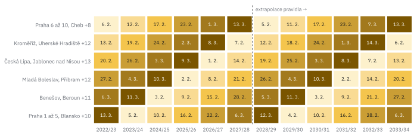
Začátek jarních prázdnin pro šest skupin okresů, 2022/23–2033/34. Tmavší odstín = pozdější týden. Vpravo od čárkované čáry extrapolace pravidla (příloha vyhlášky končí rokem 2027/28). Zdroj: příloha vyhlášky č. 16/2005 Sb.; vlastní výpočet.
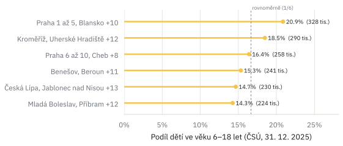
Podíl dětí ve věku 6–18 let v jednotlivých skupinách jarních prázdnin (čárkovaně rovnoměrné rozdělení, 1/6). Zdroj: ČSÚ (OBY02B, stav k 31. 12. 2025; věkové složení městských částí Prahy 2025), MŠMT; vlastní výpočet.
Jak jsem počítal děti ve skupinách
Aktuální počty žáků podle okresů jsem nenašel. Místo nich používám počet obyvatel ve věku 6–18 let, tedy zhruba věk povinné školní docházky a střední školy (ČSÚ, otevřená data OBY02B, stav k 31. 12. 2025, celkem 1 570 853 dětí). Je to přibližná míra, protože nezachytí děti, které dojíždějí do školy v jiném okrese, což je nejvýraznější kolem Prahy.
Skupiny jarních prázdnin jsou dané přílohou vyhlášky. Praha v nich ale není rozdělená na staré obvody. „Praha 1 až 5“ a „Praha 6 až 10“ jsou podle poznámky v dokumentech MŠMT seznamy městských částí. Například Praha 11, 12, 13 a 16 patří k „Praze 1 až 5“, Praha 14, 15 a 17–22 k „Praze 6 až 10“. Pražské děti proto dělím podle podílu obyvatel 5–19 let v jednotlivých městských částech, což je nejjemnější věkové členění, které ČSÚ po městských částech publikuje (XLSX). Vychází poměr 46 : 54.
Rotaci popisuje jediné pravidlo. První týden jarních prázdnin začíná v pondělí po pololetním pátku a každá skupina se rok od roku posune o týden později (ze 6. týdne zpět na 1.), takže se cyklus opakuje po šesti letech. Pravidlo reprodukuje všech 36 řádků přílohy vyhlášky (2022/23–2027/28).
tři směry reformy
Konkrétní návrh na stole není. V debatě ale opakovaně zaznívají tři směry, které se dají namodelovat a projet stejným kalendářem.
- konec vždy v pátek — letošní výjimka by se stala pravidlem,
- prázdniny 15. 6.–15. 8. — stejně dlouhé léto, jen o dva týdny dřív. Navrhuje to klimatolog Radim Tolasz z ČHMÚ, podle kterého by šlo o „normální adaptační opatření, nad kterým bychom neměli ani moc přemýšlet“ (řekl Echo24),
- kratší léto — šest týdnů v létě a zbytek rozložit do roku. Ředitel pražského Gymnázia Elišky Krásnohorské Martin Švejnoha by podle Novinek „na úkor letních prázdnin přidal volno do podzimních, vánočních, možná i velikonočních prázdnin“. Ve scénáři počítám s celým týdnem podzimních prázdnin, jak ho navrhuje i Havel, a s jedním volným týdnem v květnu, který jsem zvolil sám.
Konec v pátek léto prodlouží na 65 až 68 dní a ubere v průměru jeden až dva vyučovací dny ročně. Posun na polovinu června nemění skoro nic na počtu vyučovacích dní, jen přesune zhruba 11 dní výuky z konce června do srpna. A kratší léto znamená zhruba o osm vyučovacích dní ročně víc, pokud se k němu nepřidá ještě další volno. Co varianty udělají s vedrem ve třídách a s hlídáním dětí, ukazují další dvě části.
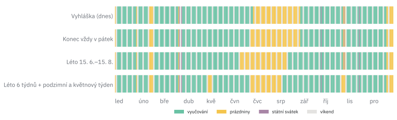
Rok 2027 ve čtyřech variantách školního kalendáře. Zeleně vyučování, žlutě prázdniny, fialově svátky, šedě víkendy. Zdroj: vlastní model.
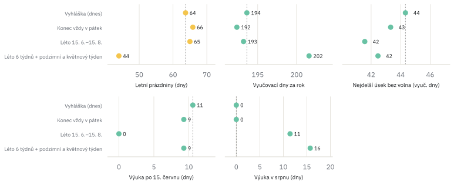
Scénáře v pěti ukazatelích, průměr za celý 28letý kalendářní cyklus (2026/27–2053/54). Čárkovaně dnešní vyhláška. Zdroj: vlastní model.
Jak přesně jsou scénáře definované
Všechny scénáře mění jen začátek a konec léta, případně přidávají volno. Vánoční, pololetní, jarní a velikonoční prázdniny i svátky zůstávají podle vyhlášky.
- konec v pátek
- poslední vyučovací den = poslední pátek do 30. 6. (z výjimky 2025/26 se stane pravidlo); začátek roku podle vyhlášky
- 15. 6.–15. 8.
- poslední vyučovací den = poslední pátek do 15. 6., výuka začíná pondělím po přesně 9 týdnech (léto 65 dní včetně víkendů)
- 6 týdnů léta
- poslední vyučovací den = poslední pátek do 30. 6., výuka začíná pondělím po 6 týdnech (44 dní); podzimní prázdniny = celý týden (po–pá) s 28. 10., navíc volný týden s 8. 5. (připadne-li datum na víkend, bere se týden před ním)
Čísla jsou průměrem přes celý 28letý kalendářní cyklus, školní roky 2026/27–2053/54, aby výsledek nezávisel na tom, jak padnou dny v týdnu v jednom konkrétním roce. Počítám s okresy, které mají jarní prázdniny ve 3. týdnu.
Pracovní den bez školy je všední den, který není svátkem a neučí se. Dovolenou určuje § 212 zákoníku práce, a to nejméně 4 týdny, ve veřejném sektoru 5 a pedagogům 8 týdnů; při pětidenním pracovním týdnu je týden dovolené 5 pracovních dní. Zjednodušeně porovnávám školní rok (od září do září, včetně následujícího léta) s dovolenou za kalendářní rok a předpokládám, že se dva rodiče s dovolenou vystřídají.
pomohl by posun proti vedru?
„Od půlky června až do září zažíváme ve třídách peklo. Snažíme se dostat děti ven, mít venkovní učebny. Nemyslím si, že termín letních prázdnin je téma, které by se mělo řešit.“
Jiří Ptáčník, ředitel ZŠ Zeleneč, pro Seznam Zprávy
Nejčastějším argumentem pro posun prázdnin je horko. Na konci června bývá ve třídách k nevydržení, a tak se nabízí poslat děti na prázdniny dřív a vrátit je do škol dřív i na konci léta. Klimatolog Radim Tolasz navrhoval termín 15. 6.–15. 8. podle Echo24 už v polovině 90. let. Zdůvodňuje to tím, že konec června bývá velmi teplý, zatímco druhá polovina srpna může být chladnější.
Podíval jsem se proto na denní maximální teploty z meteorologických stanic ČHMÚ od roku 1961 (otevřená data ČHMÚ). Konec června i konec srpna se za tu dobu výrazně oteplily, zhruba o půl až tři čtvrtě stupně za každých deset let. Rozdíl mezi nimi se ale prokazatelně nezměnil. V průměru let 1991–2025 je konec června asi o půl stupně chladnější než konec srpna, a to je méně, než kolik se počasí liší rok od roku. Prakticky jsou tedy oba konce léta stejně horké.
Co by to znamenalo pro výuku? Spočítal jsem, kolik vyučovacích dní s tropickým vedrem (přes 30 °C) by v jednotlivých variantách kalendáře připadlo do školy. Posun prázdnin na polovinu června by počet takových dní nesnížil. Zhruba stejně horkých dní by se do školy přesunulo ze srpna, jako by se jich ušetřilo v červnu. Kratší léto by naopak tropické dny ve škole zhruba zdvojnásobilo, protože by se učilo i v nejteplejších týdnech. Rozhodují budovy, tedy stínění, větrání a chlazení. Že řada škol nemá klimatizaci, připouští i sám ministr, a jeho úřad podle Novinek doporučuje, aby se školy podle možností zřizovatelů vybavovaly klimatizací či rekuperací.
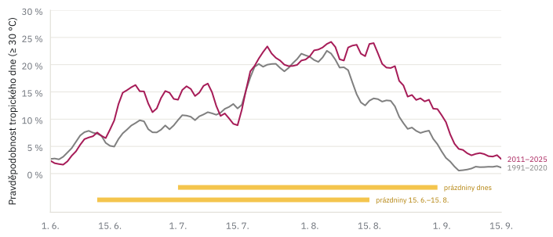
Pravděpodobnost tropického dne (Tmax ≥ 30 °C) v jednotlivých dnech léta, sedmidenní klouzavý průměr přes 25 nížinných stanic. Šedě 1991–2020, vínově 2011–2025. Žlutě dnešní prázdniny a varianta 15. 6.–15. 8. Zdroj: ČHMÚ, denní data; vlastní výpočet.
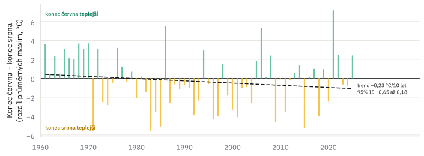
Rozdíl průměrného denního maxima 16.–30. 6. a 16.–31. 8. v každém roce 1961–2025 (14 stanic s úplnou řadou). Zeleně roky s teplejším koncem června, žlutě s teplejším koncem srpna. Čárkovaně Theil–Senův trend s 95% intervalem. Zdroj: ČHMÚ; vlastní výpočet.
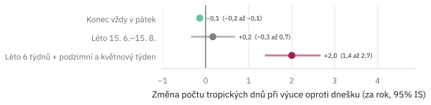
O kolik tropických dní (≥ 30 °C) za školní rok by se ve scénářích změnila výuka ve vedru oproti dnešku; bod = odhad, čára = 95% interval spolehlivosti (bootstrap přes roky). Klima 1996–2025. Zdroj: ČHMÚ; vlastní výpočet.
Data ČHMÚ a výběr stanic
Používám denní maximální teplotu vzduchu (měřenou ve 2 m v meteorologické budce) z otevřených dat ČHMÚ, a to z 41 profesionálních stanic s mezinárodním identifikátorem WMO. Historická řada končí 31. 12. 2025, léto 2026 jsem doplnil z průběžných (provozních) dat, která ČHMÚ ještě může opravit.
- hlavní soubor
- 25 stanic pod 600 m n. m. s ≥ 98 % dní v letech 1991–2025 (158–569 m n. m., medián 364 m)
- dlouhá řada
- 14 z nich s úplnou řadou 1961–2025: Brno-Tuřany, Cheb, Chotusice, Doksany, Holešov, Kostelní Myslová, Kuchařovice, Liberec, Mošnov, Praha-Karlov, Praha-Kbely, Praha-Ruzyně, Přibyslav, Ústí nad Orlicí
- vynechané
- horské stanice (Sněžka, Lysá hora, Churáňov, Milešovka…), kde se neučí, a stanice s kratší řadou
- letní den
- Tmax ≥ 25 °C
- tropický den
- Tmax ≥ 30 °C (obojí terminologie ČHMÚ)
Venkovní teplota je jen přibližná míra toho, jak je ve třídě. Učebny se ohřívají se zpožděním a hodně záleží na budově (orientace oken, stínění, větrání).
Jak jsem testoval, jestli se konec června otepluje rychleji
Stanice měří z velké části totéž počasí a dny uvnitř vlny veder na sobě závisí. Nezávislých pozorování proto není „tisíce stanicodní“, ale zhruba tolik, kolik je let. Jednotkou analýzy je tedy rok. Pro každý rok a stanici spočítám průměrné denní maximum ve dvou oknech, 16.–30. 6. a 16.–31. 8., a jejich rozdíl D zprůměruji přes stanice.
Rozdíl na téže stanici v témže roce má ještě jednu výhodu. Používám naměřené hodnoty tak, jak je ČHMÚ publikuje, bez vlastní homogenizace. Stanice se přitom v průběhu let přemisťovaly (metadata ČHMÚ uvádějí u řady z nich víc poloh) a mění se i přístroje a okolí, například růstem měst. To by mohlo vytvořit falešný trend. Takové změny ale zasáhnou červen i srpen stejně a v rozdílu se z velké části vyruší.
Primární test se ptá, jestli má D v letech 1961–2025 nenulový lineární trend. Trend odhaduji metodou nejmenších čtverců se směrodatnou chybou podle Neweyho a Westa, která je odolná vůči autokorelaci mezi sousedními roky (3 zpoždění). Pro kontrolu počítám i robustní Theil–Senův odhad sklonu (medián sklonů mezi všemi dvojicemi let) a Mann–Kendallův test.
trend D (1961–2025) = −0,19 °C / 10 let 95% IS −0,62 až +0,24 p = 0,38 (OLS, Newey–West) konec června: +0,54 °C / 10 let (p = 0,008) konec srpna: +0,73 °C / 10 let (p < 0,001)
Theil–Sen dává −0,23 °C za 10 let (95% interval −0,65 až +0,18), Mann–Kendall τ = −0,10, p = 0,26. Prokazatelnou změnu rozdílu mezi koncem června a koncem srpna tedy data neukazují a konec srpna se oteplil spíš o něco víc. Meziroční kolísání D je přitom velké, se směrodatnou odchylkou zhruba 2,9 °C, tedy mnohem víc než rozdíl, o který jde.
Na 25 stanicích za kratší období 1991–2025 vychází trend kladný (+0,84 °C za 10 let podle OLS), ale robustní metody ho nepotvrzují (Theil–Sen −0,13 až +1,85, Mann–Kendall p = 0,07). Výsledek tak závisí na tom, že řada začíná po chladných červnech 80. let. Srovnání nepřekrývajících se období 1991–2010 a 2011–2025 dává rozdíl +1,0 °C s 95% intervalem −0,9 až +2,9 (permutační test p = 0,32). V průměru let 1991–2025 je konec června o 0,6 °C chladnější než konec srpna (95% interval −1,5 až +0,4).
Jak jsem počítal vedro při výuce a jeho nejistotu
Pro každý kalendářní den (např. 23. června) spočítám, jak často v něm bylo tropicky, tedy podíl stanic s Tmax ≥ 30 °C zprůměrovaný přes roky 1996–2025. Tyto pravděpodobnosti pak sečtu přes všechny vyučovací dny daného kalendáře. Výsledek je očekávaný počet vyučovacích dní s tropickým vedrem za školní rok. Dnešní kalendář jich má 2,2 (95% interval 1,7–2,7).
Nejistotu odhaduji bootstrapem přes roky. Desettisíckrát náhodně vyberu (s opakováním) 30 let z období 1996–2025, přepočítám pravděpodobnosti a expozici všech scénářů. Výběr je párový, takže všechny scénáře se počítají na týchž vybraných letech a interval rozdílu oproti dnešku nezatěžuje kolísání, které je všem scénářům společné.
- konec v pátek
- −0,14 dne (−0,22 až −0,07)
- 15. 6.–15. 8.
- +0,17 dne (−0,34 až +0,69); méně než dnes vychází jen v 26 % opakování
- 6 týdnů léta
- +2,00 dne (+1,38 až +2,68)
S klimatem 2011–2025 vychází posun prázdnin +0,36 (−0,46 až +1,22) a šestitýdenní léto +2,72 (+1,77 až +3,76). S prahem 25 °C (letní dny) je posun +0,49 (−0,68 až +1,58), resp. −0,08 (−1,62 až +1,39), a šestitýdenní léto +6,7 až +7,3 dne. Předpokládám, že klima zůstane na úrovni zvoleného období. Další oteplování by zvýšilo expozici ve všech scénářích.
očekávané tropické dny = Σ_den (vyučovací dny v daný den) × P(Tmax ≥ 30 °C v daný den)
Kontrola se stanicemi váženými počtem dětí a s létem 2026
Průměr přes stanice váží každou stanici stejně, děti ale nežijí rovnoměrně. Jako kontrolu jsem proto každý ze 205 správních obvodů obcí s rozšířenou působností (ORP) a Prahu přiřadil nejbližší stanici podle vzdušné vzdálenosti od sídla obvodu. Sídlo je od přiřazené stanice v mediánu 24 km daleko, nejdál Broumov (68 km). Váhou stanice je počet dětí ve věku 6–18 let v jejích obvodech (ČSÚ, OBY02B), souřadnice sídel pocházejí z Wikidat. Nejvíc váží Praha-Karlov (12 %; Praha je pro ČSÚ jeden obvod), Mošnov (11 %) a Brno-Tuřany (9 %).
| varianta | trend D (°C / 10 let) | 15. 6.–15. 8. (tropické dny) | 6 týdnů léta |
|---|---|---|---|
| nevážené, do 2025 | −0,19 (−0,62; 0,24) | +0,17 (−0,34; 0,69) | +2,00 |
| vážené dětmi, do 2025 | −0,20 (−0,63; 0,24) | +0,15 (−0,38; 0,68) | +2,06 |
| nevážené, s létem 2026 | −0,10 (−0,56; 0,37) | −0,02 (−0,64; 0,57) | +1,99 |
| vážené dětmi, s létem 2026 | −0,10 (−0,57; 0,37) | −0,04 (−0,68; 0,57) | +2,04 |
Závěry se nemění. Vážená expozice je jen o zhruba 8 % vyšší (2,34 místo 2,17 tropického dne ročně), protože děti žijí v průměru v teplejších oblastech, hlavně v Praze, na Brněnsku a na Ostravsku. Chybějící září až prosinec 2026 doplňuji průměrem ostatních let; stanice Chotusice data za rok 2026 nemá.
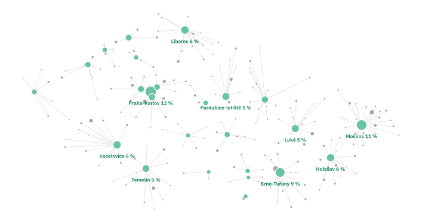
Sídla správních obvodů ORP (šedě, velikost podle počtu dětí) a nejbližší meteorologická stanice (zeleně, velikost podle váhy). Zdroj: ČSÚ (OBY02B), Wikidata, ČHMÚ; vlastní výpočet.
kdo pohlídá děti
Debata o prázdninách je i debatou o tom, kdo pohlídá děti. Jedna z komentujících pod ministrovým příspěvkem to podle Novinek shrnula slovy „Spíš bych řešila, jak to mají všechno rodiče vykrýt, když mají 20 dní dovolené.“ To se dá spočítat přesně.
Dnešní kalendář má ročně zhruba 57 pracovních dní, kdy děti nejsou ve škole, asi 14 během školního roku a 43 v létě. Zákonná dovolená je nejméně čtyři týdny, tedy opravdu 20 pracovních dní (§ 212 zákoníku práce). I když se dva rodiče s dovolenou vystřídají, zbývá kolem 17 dní, které musí pokrýt prarodiče, tábory nebo neplacené volno. Ve veřejném sektoru, kde je dovolená pět týdnů, je to kolem sedmi dní.
Posun léta na 15. 6.–15. 8. na tom nezmění skoro nic, mezera vyjde na 18 dní. To přesně odpovídá tomu, co říkala Seznam Zprávám Angelika Gergelová z Unie rodičů. „Pokud by se prázdniny jen posunuly, pro rodiny by se v zásadě nic nezměnilo.“ Rodiny by podle ní ocenily spíš větší rozložení prázdnin do celého roku. Kratší léto s volnem rozloženým do roku by mezeru zmenšilo zhruba na devět dní. Pro pracující rodiče tak kratší léto nemusí být horší, i když Unie rodičů se podle téhož článku s přáním kratšího léta nesetkává.
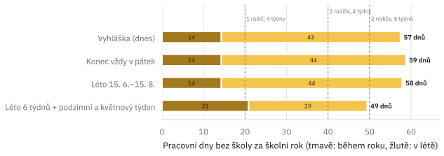
Pracovní dny bez školy za školní rok (tmavě během roku, žlutě v létě), průměr 2026/27–2053/54. Čárkované čáry ukazují dovolenou jednoho rodiče se 4 týdny a dvou rodičů, každého se 4, resp. 5 týdny. Zdroj: zákoník práce č. 262/2006 Sb., § 212; vlastní model.
Svátky, které děti nevidí
Zákon č. 245/2000 Sb. zná 13 dní státních a ostatních svátků. Dětem přidá volno jen svátek, který padne na den, kdy by se jinak učilo. Ten, který připadne na víkend nebo do prázdnin, pro ně „propadne“. Ve školních letech 2026/27–2053/54 přidají svátky dětem v průměru 5,6 volného dne ročně (podle roku 4–7), 4,3 svátku padnou do prázdnin a 3,1 na víkend.
- vždy volno navíc přinesou Velký pátek a Velikonoční pondělí (Velikonoce jsou vždy ve školním roce a vždy ve všední den),
- nikdy ho nepřinesou Štědrý den, oba svátky vánoční a Nový rok (vždy ve vánočních prázdninách), 5. a 6. července (vždy v létě),
- v 71 % let ho přinesou 28. 9., 28. 10., 17. 11., 1. 5. a 8. 5. Svátek s pevným datem padne na víkend vždy ve 2 ze 7 případů.
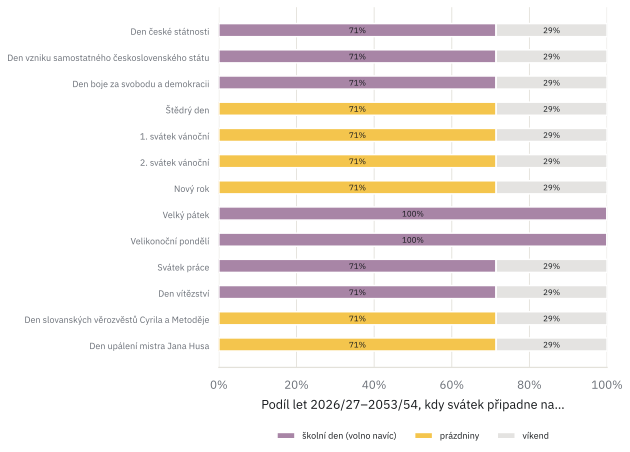
Podíl let 2026/27–2053/54, kdy svátek připadne na den, kdy by se jinak učilo (fialově), do prázdnin (žlutě) nebo na víkend (šedě). Zdroj: zákon č. 245/2000 Sb., vyhláška č. 16/2005 Sb.; vlastní výpočet.
vyzkoušej si svůj školní rok
Jak vypadá školní rok tam, kde bydlíte? Vyberte okres (nebo pražský obvod) a školní rok. Kalendář ukáže prázdniny, svátky i nejdelší úsek bez volna a pod ním najdete, kolik dní má léto a kolik pracovních dní bez školy musí rodiče pokrýt. Roky, které ministerstvo ještě nevyhlásilo, jsou vypočtené podle pravidel vyhlášky.
co z toho plyne pro debatu
Gergelová z Unie rodičů v srpnu řekla, že „pokud se při rozhodování budeme opírat o data a nějaké analýzy, dává mi to smysl“. Tady je, co z dat vychází.
- Délka léta. Letní prázdniny mají podle vyhlášky vždy 62, nebo 65 dní. Letošních 66 dní způsobilo jedno rozhodnutí ministerstva, ne kalendář.
- Evropa. Devět týdnů sedí, „evropský průměr“ už méně. Medián je 10 týdnů a kratší léto než Česko má jen 10 z 39 evropských systémů.
- Rozložení. Letošní školní rok má od Velikonoc do konce června 13 týdnů bez jediného volného dne a podobně dlouhý úsek se vrací jednou za několik let. Jarní prázdniny rozkládají děti do šesti týdnů nerovnoměrně, od 14 do 21 % dětí na týden.
- Vedro. Posun léta na 15. 6.–15. 8. by počet tropických dní ve škole nesnížil, protože konec června a konec srpna jsou dnes prakticky stejně teplé. Kratší léto by ho zhruba zdvojnásobilo.
- Rodiče. Posun léta by na hlídání nezměnil nic. Kratší léto s volnem rozloženým do roku by mezeru, kterou musí rodiče pokrýt, zhruba zpolovičilo.
Žádná varianta tak není zadarmo. Kdo chce méně vedra ve třídách, musí sáhnout na budovy, ne na kalendář. Kdo chce pomoct pracujícím rodičům nebo zkrátit dlouhé úseky bez volna, musí počítat s tím, že část výuky se přesune do teplejších týdnů.
limity
- Počet obyvatel 6–18 let je jen přibližná míra počtu žáků, protože nezachytí dojíždění do škol v jiném okrese, nejvíc kolem Prahy.
- Venkovní teplota z meteorologických stanic je přibližná míra teploty ve třídách, která závisí na budově.
- Scénáře jsou ilustrativní, protože konkrétní návrh zatím neexistuje. Termín 15. 6.–15. 8. a týdenní podzimní prázdniny přebírám z debaty, délku kratšího léta (6 týdnů) a volný týden v květnu jsem zvolil sám.
- Analýza vedra vznikla nejdřív popisně, hypotézy jsem formuloval až potom; není tedy předregistrovaná (viz rámeček o testování).
- Dovolenou porovnávám zjednodušeně, školní rok proti kalendářnímu roku a se dvěma rodiči, kteří se vystřídají; ředitelské volno ani školní družinu nezapočítávám.
- Plné dokumenty MŠMT chybí pro tři roky (2009/10, 2011/12, 2018/19); u nich je ověřen jen začátek roku.
- Eurydice počítá délku léta po zemích různě, rozdíly několika dní nejsou interpretovatelné.
data a zdroje
U každého zdroje uvádím, kdy jsem ho stáhl. Surové kopie všech souborů i s adresou a časem stažení si archivuji.
- legislativaVyhláška č. 16/2005 Sb., o organizaci školního roku, znění od 1. 9. 2022, včetně přílohy s jarními prázdninami (staženo 29. 9. 2026).
- legislativaZákon č. 245/2000 Sb., o státních svátcích a zákoník práce č. 262/2006 Sb., § 212 o výměře dovolené, znění od 29. 8. 2026 (staženo 1. 10. 2026).
- MŠMTOrganizace školního roku 2005/06–2027/28, skutečně vyhlášené termíny. Aktuální ročníky na msmt.gov.cz, starší přes Internet Archive (25 dokumentů, staženo 29. 9. 2026). Zkrácení školního roku 2025/26 na edu.gov.cz.
- ČSÚObyvatelstvo podle pohlaví a jednotek věku (OBY02B), okresy a správní obvody ORP, stav k 31. 12. 2025, a Věkové složení obyvatel v městských částech Prahy 2011–2025 (obojí staženo 29. 9. 2026).
- ČHMÚDenní maximální teplota (TMA) 41 profesionálních stanic do 31. 12. 2025, metadata stanic a průběžná data za leden až srpen 2026 (staženo 30. 9. 2026); popis dat.
- EurydiceSchool calendars 2023/24, Country sheets (staženo 29. 9. 2026); novější ročníky jen v interaktivním přehledu.
- WikidataSouřadnice obcí (kód obce P7606, souřadnice P625; dotaz SPARQL 30. 9. 2026).
- WikipediePrázdniny, česká Wikipedie, tvrzení o délce letních a vánočních prázdnin (staženo 29. 9. 2026).
- médiaPříspěvek Roberta Plagy na Facebooku (srpen 2026). Texty všech článků níže jsem stáhl 1. 10. 2026.
- médiaM. Kopecká, Dávají dva měsíce prázdnin smysl? Plaga testuje reakce veřejnosti, Seznam Zprávy, 11. 8. 2026 (výroky J. Ptáčníka, F. Dobšíka, K. Garguláka, A. Gergelové a J. Nekudy).
- médiaZrušit pololetní, prodloužit podzimní. Jak by se dětem mohly změnit prázdniny, Seznam Zprávy, 17. 2. 2025 (návrh M. O. Havla, průzkum Ipsos, srovnání s Eurydice).
- médiaPlaga opakovaně mluví o změně rozložení školních prázdnin, Echo24, 24. 8. 2026 (citace ministrova příspěvku), a V. Horák, Delší prázdniny kvůli vedrům? Odborníci se přou, Echo24, 7. 8. 2026 (návrh R. Tolasze).
- médiaMají se letní prázdniny zkrátit? Plaga dumá o změnách, Novinky.cz, 14. 8. 2026 (M. Švejnoha, O. Macura, reakce veřejnosti).
- médiaŽáci a studenti budou mít letos delší letní prázdniny, Hospodářské noviny (ČTK), 31. 3. 2026; Křížení táborů i tlak na pořadatele, Deník.cz, 2. 4. 2026 (A. Sedláček).
- médiaF. Titlbach, Kratší prázdniny, zákaz mobilů a konec devítek?, Deník N, 2. 9. 2026; Evropa kvůli vedrům mění délku prázdnin, TN.cz, 9. 8. 2026.
- metodaNewey, W. K., & West, K. D. (1987). A simple, positive semi-definite, heteroskedasticity and autocorrelation consistent covariance matrix. Econometrica, 55(3), 703–708.
- metodaNewey, W. K., & West, K. D. (1994). Automatic lag selection in covariance matrix estimation. Review of Economic Studies, 61(4), 631–653.
- metodaTheil, H. (1950). A rank-invariant method of linear and polynomial regression analysis. Proceedings of the Koninklijke Nederlandse Akademie van Wetenschappen, 53.
- metodaSen, P. K. (1968). Estimates of the regression coefficient based on Kendall's tau. Journal of the American Statistical Association, 63(324), 1379–1389.
- metodaMann, H. B. (1945). Nonparametric tests against trend. Econometrica, 13(3), 245–259.
- metodaEfron, B., & Tibshirani, R. J. (1993). An Introduction to the Bootstrap. Chapman & Hall.
kód a data
- repoKód, notebooky, testy a podrobnou metodiku zveřejním v repozitáři HolidayCalc na GitHubu.